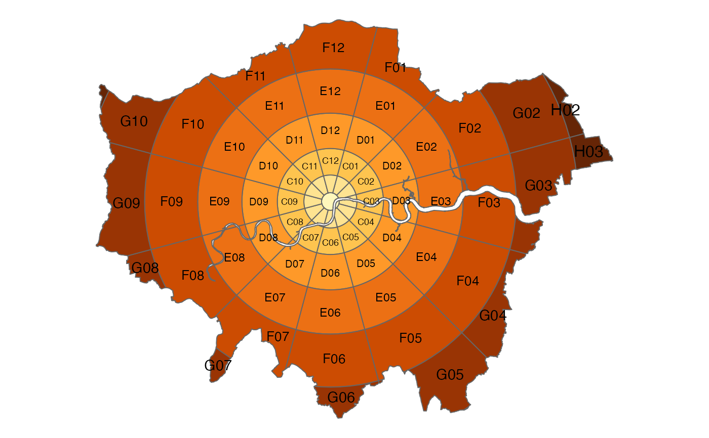
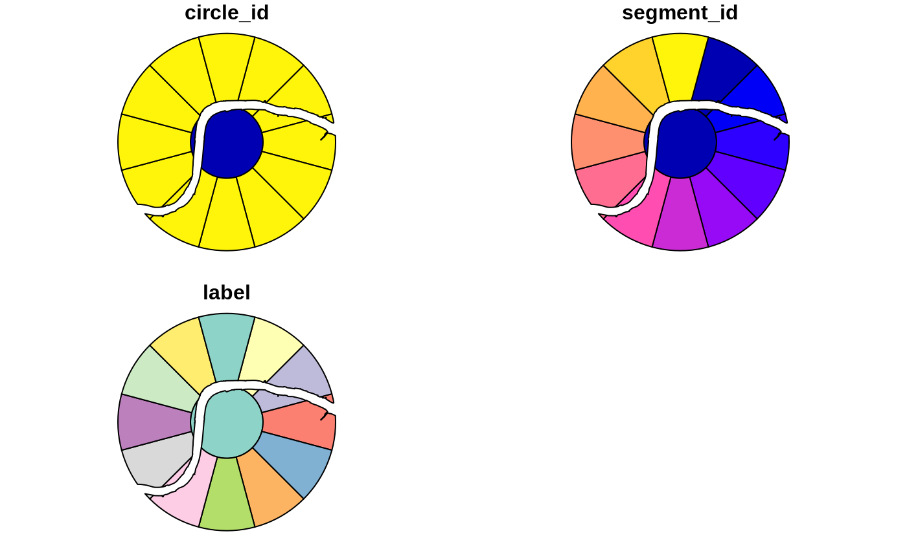
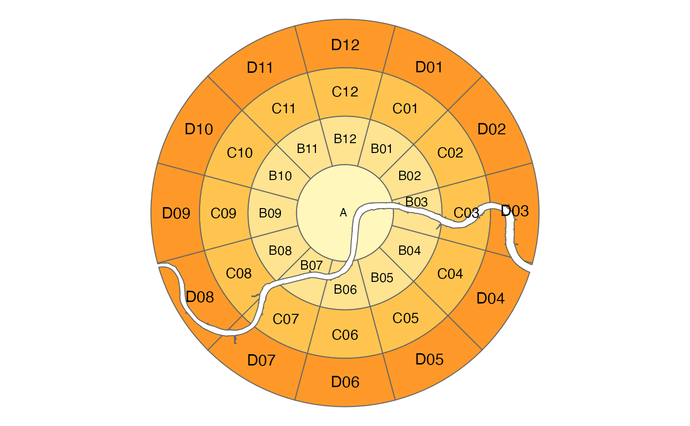
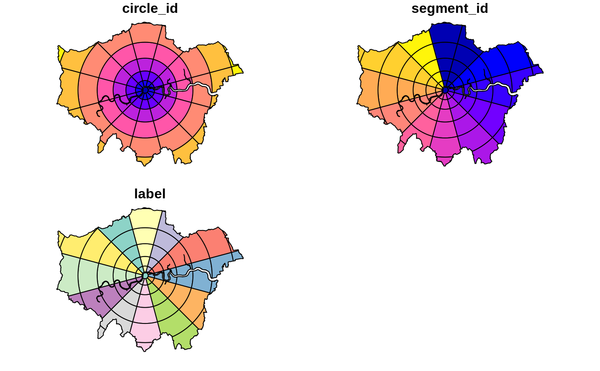
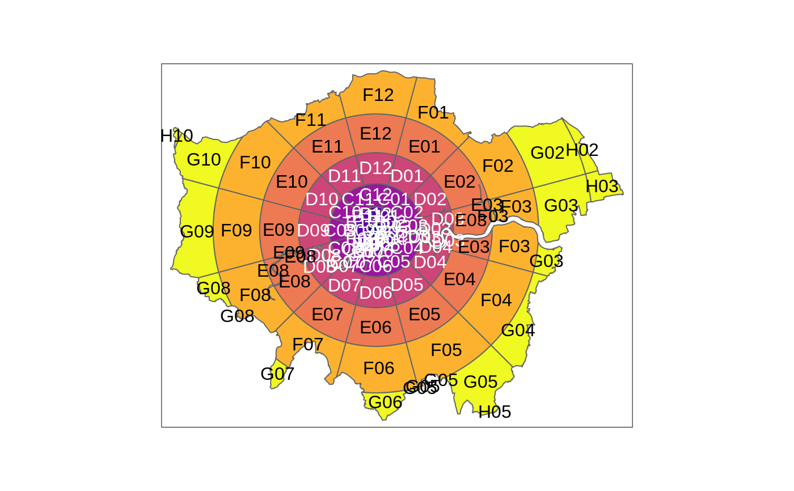
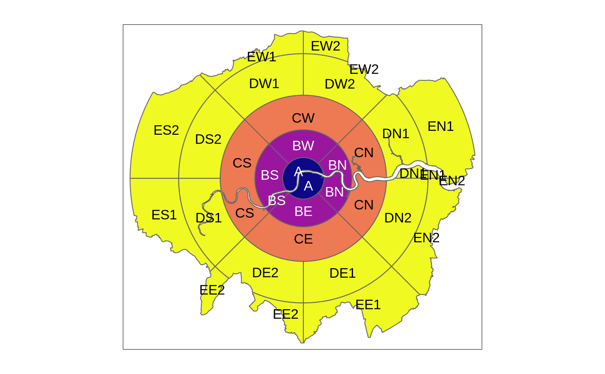

zb_zone.RdThis function first divides geographic space into [annuli](https://en.wikipedia.org/wiki/Annulus_(mathematics)) (concentric 2d rings or 'doughnuts') and then subdivides each annulus into a number of segments.
zb_zone( x = NULL, point = NULL, n_circles = NULL, n_segments = 12, distance = 1, distance_growth = 1, starting_angle = -15, segment_center = FALSE, intersection = TRUE )
| x | Region of interest |
|---|---|
| point | Optional midpoint of the region |
| n_circles | Number of rings including the central circle |
| n_segments | Optional sequence of numbers |
| distance | Distance (km) |
| distance_growth | The rate at which the doughnut ring widths grow (km) |
| starting_angle | The angle of the first of the radii that create the segments (degrees) |
| segment_center | Should the central circle be divided into segments? `FALSE` by default. |
| intersection | Not implemented yet |
An `sf` object containing zones covering the region
By default 12 segments are used for each annuli, resulting in a zoning system that can be used to refer to segments in [clock position](https://en.wikipedia.org/wiki/Clock_position), with 12 representing North, 3 representing East, 6 Sounth and 9 Western segments.
z = zb_zone(zb_region, n_circles = 4) z#> Simple feature collection with 37 features and 3 fields #> geometry type: GEOMETRY #> dimension: XY #> bbox: xmin: 521101.7 ymin: 169704.5 xmax: 541098.2 ymax: 189704.5 #> epsg (SRID): 27700 #> proj4string: +proj=tmerc +lat_0=49 +lon_0=-2 +k=0.9996012717 +x_0=400000 +y_0=-100000 +ellps=airy +units=m +no_defs #> First 10 features: #> circle_id segment_id label geometry #> 1 1 1 A MULTIPOLYGON (((532101.7 17... #> 2 2 1 B01 POLYGON ((530325.3 182602.3... #> 3 2 10 B10 POLYGON ((528203.9 178928, ... #> 4 2 11 B11 POLYGON ((528203.9 180481, ... #> 5 2 12 B12 POLYGON ((528980.4 181825.8... #> 6 2 2 B02 MULTIPOLYGON (((531808.8 18... #> 7 2 3 B03 MULTIPOLYGON (((532067.6 17... #> 8 2 4 B04 MULTIPOLYGON (((534101.7 17... #> 9 2 5 B05 POLYGON ((533999.5 178928, ... #> 10 2 6 B06 POLYGON ((533223 177583.2, ...plot(z)if (require(tmap)) { # tmap_mode("view") # for interactive maps z = zb_zone(zb_region, n_circles = 3) tm_shape(z) + tm_polygons("circle_id", palette = "plasma", legend.show = FALSE) + tm_text("label") z = zb_zone(zb_region, distance = 3, n_segments = c(1, 4, 4, 8, 8)) tm_shape(z) + tm_polygons("circle_id", palette = "plasma", legend.show = FALSE) + tm_text("label") }#>